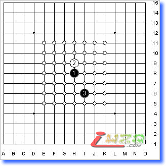

联合声明中的"Taraguchi“规则
#1 联合声明中的"Taraguchi“规则 作者：有志青年 发表时间：2008-1-9 9:26:39
我想是吴镝的地毯谱彻底震撼了西方人，所以他们迫不及待的发表了联合声明，称连珠开局规则一定要改，大体的意向是采用当年的4号规则：“Taraguchi“规则。
【注：联合声明见：ShowPost.asp?ThreadID=3235】
我们来看看这个规则是咋回事。
1、 执黑者在天元放第1子，另一位选手可以交换。然后 执白者在中央3×3区域内放第2子，另一位选手可以交换。然后执黑者在中央5×5区域内放第3子， 另一位选手可以交换。
2、然后执白者在中央7×7区域内放第4子。
3、第五手可以有两种选择：
1）可以交换，则执黑者在中央9×9区域内放第5子， 另一位选手可以交换。然后执白者在棋盘上任意位置放第6子。开局阶段结束，按连珠规则正常继续进行。
2）不交换，则执黑者需要五手5打，就是在棋盘任意位置同时落下五子，执白者选择这些5子之一，然后在棋盘上任意位置下第6子。开局阶段结束，按连珠规则正常继续进行。
试着跟rif规则做一下比较。见下图。第一手落在天元，第二手在3×3范围，这跟Rif规则一样，开局还是分为直指开局和斜指开局两种，区别在于，一手可交换，二手也可以交换。多了两次交换。

以直指开局为例，见下图。第三手在5×5范围，因此跟RiF规则一样，直指和斜指开局还是各有13种开局，一共是26种。三手都可以选择交换。
再来看第四手，见下图。新规则对第四手落子范围做了限制，是7×7大小，另外第四手可以选择交换。Rif规则对第四手没有范围的限制，是不可以交换的。

随便举一个4吧。第五手有两种选择，第一种选择是局限在9×9范围内，，见下图。然后第6手可以选择交换。
还有第二种选择，是五手5打，在棋盘的任意位置，类似五手两打，选择其中之一，继续行棋。
这大约就是这个规则的样子了，谈一下对新规则的几点理解：
1、新规则对rif规则基本上是一种继承与发展，第一子落在天元，第二子分为直指和斜指，第三子26种rif开局，保留禁手规则，这基本上是一种继承；发展在于多了交换的次数，以及五手5打，在一定程度上可以限制不平衡局面的发生。
2、我认为禁手是一个比较好的规则，这给连珠增添了许多乐趣，因此保留还是很得人心，弃之则太可惜了。
3、新规则没有规定对称问题，或许这个会有所讨论，期待。
4、关于交换，新规则的交换次数多了一些，结果使整个规则看起来繁冗芜杂，我倒觉得第一手交换和第二手交换完全可以去掉，不知道在这里交换有什么意义。
5、妖刀开局在新规则下还是登不了大雅之堂，或许只能寻找一些通型了。或许可以考虑增大三手的落子范围，让妖刀开局获得表现的机会，我在想中国代表到时与会讨论的时候是否可以提及这一点。
6、新规则的实施会增大五子棋研究的工作量，比如要拆解第五手哪些是必败的，哪些是必胜的，这些点都要舍弃，然后剩下的再做进一步研究。
7、总体上来说，新规则会增大五子棋的变化量，或许研究这些变化也够研究一段时间了，但这些变化量还是未必够用，早晚有一天规则改革的问题还是会提上日程。新规则的弊端就在于限制了落子的范围，这就大大限制了变化量，解放了天元，才能真正解放五子棋。当然了，我们也不可能期望一口吃成胖子，一步一步进行吧。
8、担忧：新规则比rif规则还要复杂，若实施起来可能在几方面会有影响。
一是原有的教学理论需要重新梳理，已有的五子棋书籍可能要作古了；
二是国内游戏服务器不知能否与时俱进，若还是固步不前，则势必会分成几派，会影响连珠届的团结；
三是新规则改革必然触犯传统势力的利益，比如很多人对五子棋做了终结工作，应该说花费了很大心血与工作量，新规则的贸然闯入，导致原有工作的可能流水东去，由安于枕上到如履薄冰，未必会接受的很痛快；
四是新规则必然会拉大与初学者的距离，现在就有很多人在说无禁规则有多好多好，实际上我一直认为，无禁未必就好，很多人之所以这么说，只是